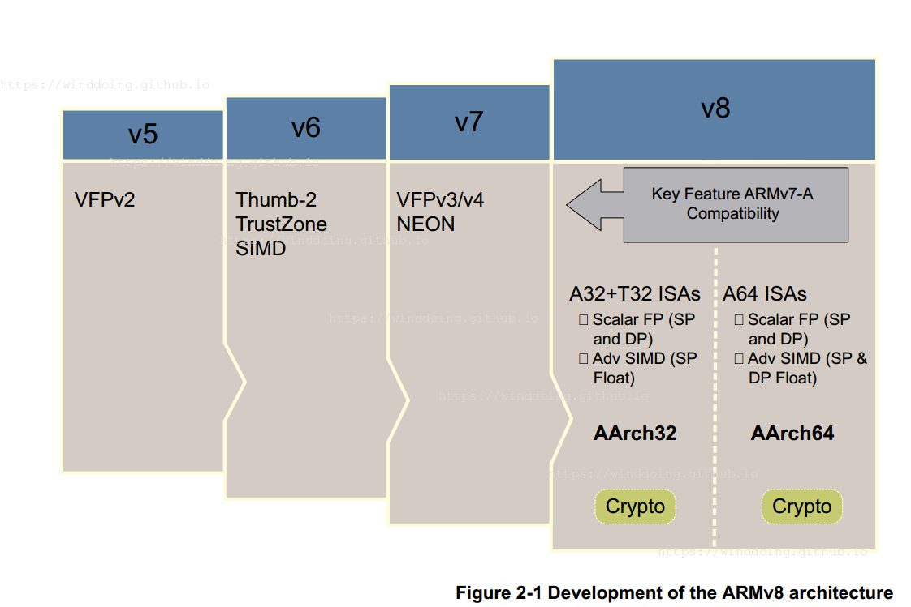
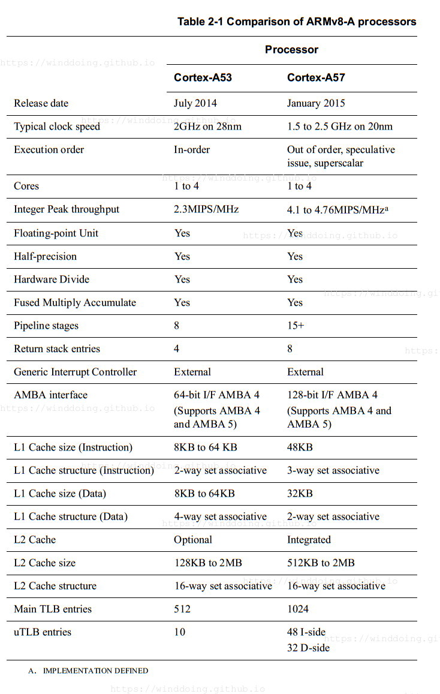
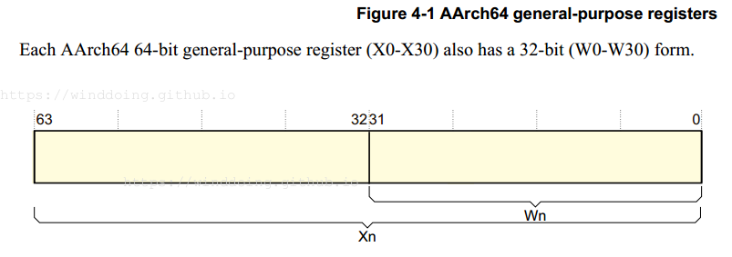
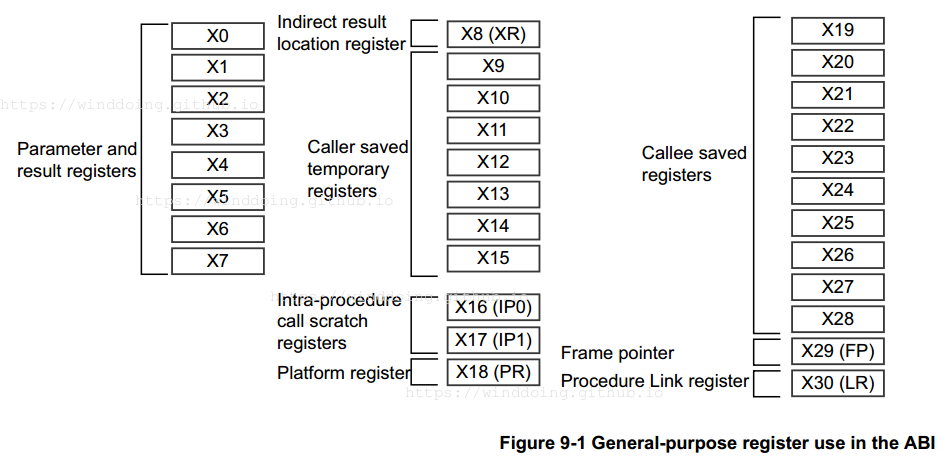
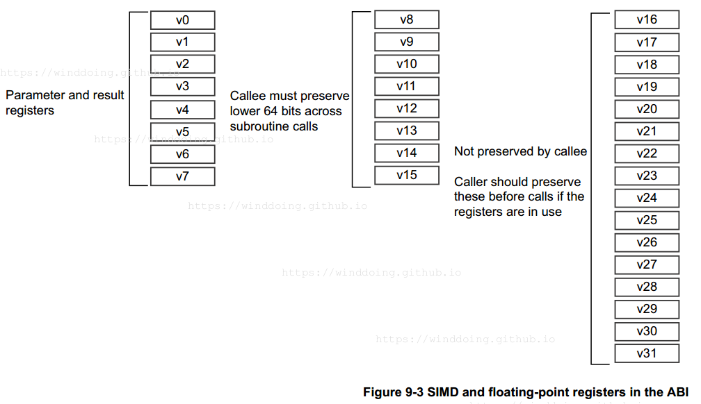

ARM64指令汇总
arch
 
instruction
STP=Store Pair 存一对儿，小端存储顺序，从小到大。RSB OP1 OP2OP2-OP1 反向减法。MOVKMove wide with keep 将一个可选移位的 16 位立即值移动到一个寄存器中，保持其他位不变。
寄存器
AArch 拥有 31 个通用寄存器，系统运行在 64 位状态下的时候名字叫 Xn，运行在 32 位的时候就叫 Wn. 
32 位 W 寄存器构成相应 64 位 X 寄存器的下半部分。 也就是说，W0映射到 X0 的低位字，W1 映射到 X1 的低位字。
ABI
一般调用

浮点调用
